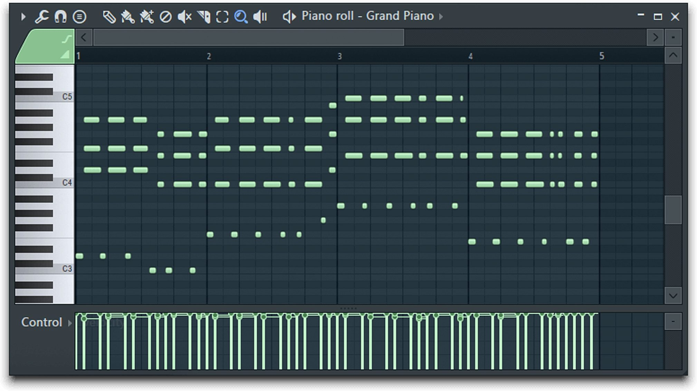

Through a series of arrays holding the notes for each scale avaliable on the piano, my generator is able to randomly generate chords based on a selected scale and mood.
Major chords are easier to generate, as you simply skip over every other note in a scale to get a major chord. Minor chords are different however, and the second note in the chord needs to be flattened, which my generator still needs work on.
ChordGen was built using the audiosynth.js library by keithwhor.
Audiosynth provides a MIDI sound library for the browser and I was able to utilize this in playing generated chords.
I created this website to help me learn more about music theory, especially in creating chords and chord progressions.
I use FL Studio to make music, and having a program that generates chords is very useful in the way FL lays out MIDI notes. For example:
